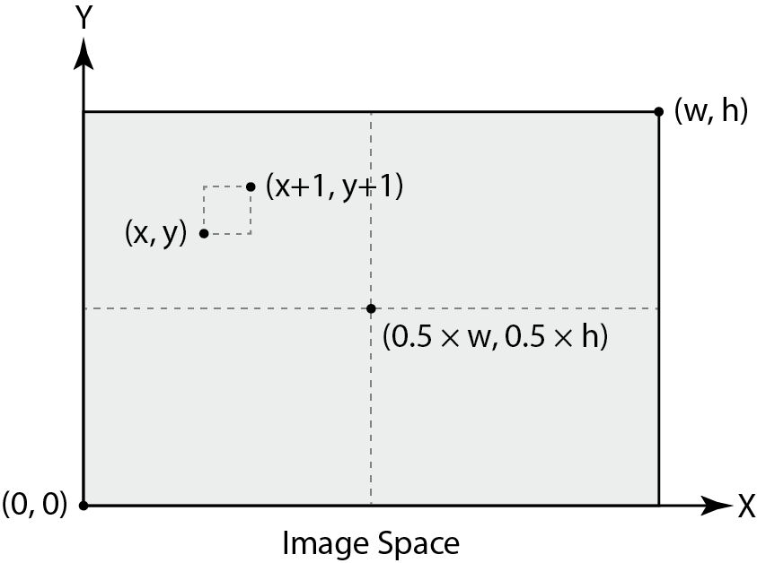
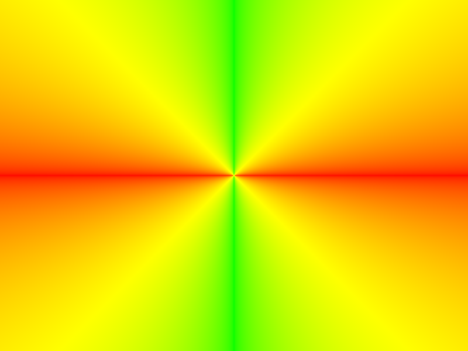
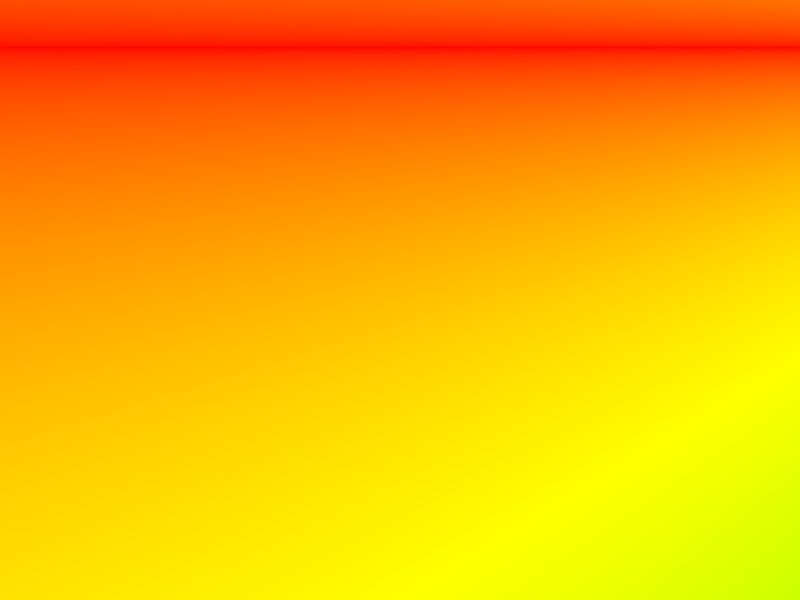
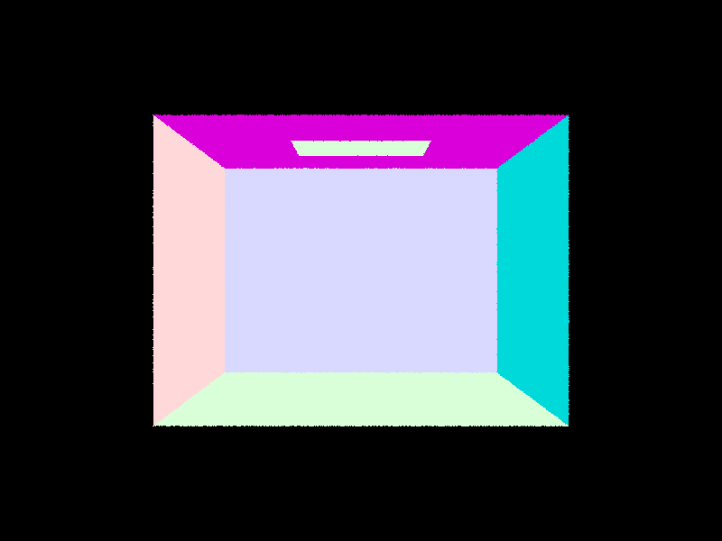
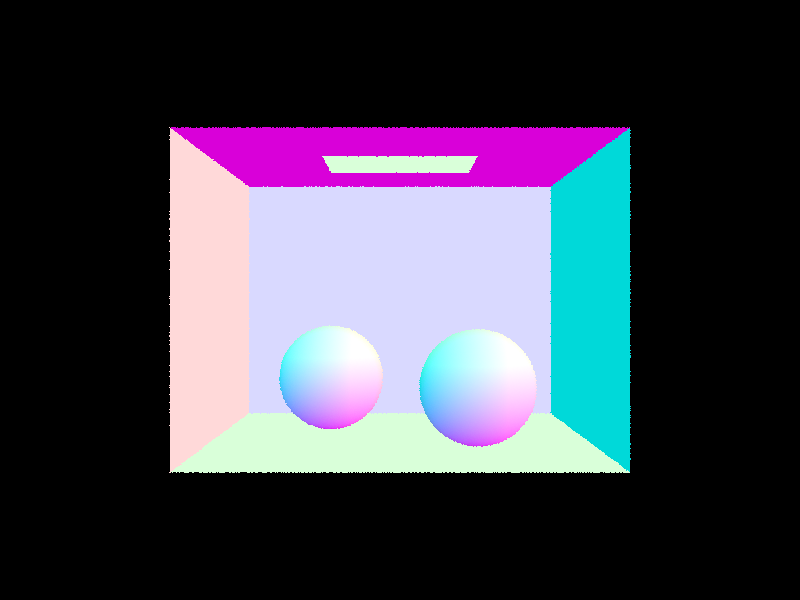

Task 1: Generating Camera Rays
Fill in Camera::generate_ray(...) in src/pathtracer/camera.cpp.
This function takes the normalized image coordinates as input and outputs a Ray in the world space. By convention, you will first transform the image coordinates to camera space, generate the ray in the camera space, and finally transform it into a ray in the world space.
The camera space has its own coordinate system. As illustrated below, in the camera space, the camera is positioned at and looks along its axis, called the viewing direction.
Along this viewing direction, we define an axis-aligned rectangular virtual camera sensor that lies on the plane. The center of the sensor is at . Its bottom left corner is at and its top right corner is at , where and are field of view angles along and axis.

This virtual camera sensor corresponds to an image. A point on the image can be mapped to the sensor, and vice versa. Specifically, normalized image coordinates and should map to the bottom left and top right corner of the sensor in camera space, respectively. Notice that for the normalized image coordinates, is positioned at the bottom left corner of the image. This coordinate system is different from the one we used in Assignment 1, where was at the top left corner of the image.
As shown in the figure, the ray in camera space should start at the camera and go through the point on the sensor that corresponds to the normalized image coordinates given as input. You want to then transform this ray into a ray in world space. A ray has an origin and a direction. You need to transform both correctly to properly convert a ray from camera space to world space. In addition, we require that the ray direction must be a normalized vector.
Implementation Notes:
Camera has the following member variables that you may use for implementation. This is not an exhaustive list.
hFovandvFovdefine the sensor. Note they are in degress and not in radians.posis the camera position in the world space andc2wis the camera-to-world rotation matrix.nclipandfclipare both greater than zero and represent the so-called near and far clipping planes. We consider everything that lies outside these two clipping planes invisible to the camera. You should initializemin_tandmax_tof aRaywithnclipandfclip, respectively. We will explain this initialization in Task 3.
After completing Task 1 and 2, you will be able to generate images to debug your implementation.
Task 2: Generating Pixel Samples
Fill in PathTracer::raytrace_pixel(...) in src/pathtracer/pathtracer.cpp.
The input pixel coordinates lie in the unnormalized image space. Recall from part 1 that the image space has its own coordinate system, where is positioned at the bottom left corner of the image. The input therefore corresponds to the bottom left corner of a pixel.

This function takes pixel coordinates as input and updates the corresponding pixel in sampleBuffer with a Vector3D representing the integral of radiance over this pixel. This integral will be estimated by averaging ns_aa samples.
To estimate the integral of radiance over a pixel, you should generate ns_aa random rays using generate_ray(...) which you implemented in part 1. For each ray, you should call PathTracer::est_radiance_global_illumination(Ray r) to estimate the scene radiance along that ray and then incorporate it into the Monte Carlo estimate of the Vector3D value of the pixel.
Introduction to Samplers:
The concept of sampling, which has already appeared multiple times in this class, will be relied on heavily throughout this assignment. To that end, we introduce and provide a set of "Sampler" classes in src/pathtracer/sampler.h. You can use them to draw 2D or 3D random samples from a particular distribution. For example, PathTracer has a member variable gridSampler, which represents a uniform distribution on a unit square. You can call the get_sample() method of any "Sampler" to draw a random sample.
Implementation Notes:
PathTracerhas a member variablecamera. You can generate a ray by callingcamera->generate_ray(double x, double y). Remember, the input coordinates to this method must be normalized by the width and height of the image, i.e., . You can use member variablewandhofsampleBufferto scale coordinates accordingly.- In the starter code,
PathTracer::est_radiance_global_illumination(...)simply returns a debugging color based on either (1) the direction of the camera ray or (2) the normal of some surface intersected by the camera ray. You will implement ray intersection with triangles and spheres in Task 3 and 4. As you proceed with the assignment, you will also update this radiance estimation function with more physically realistic lighting computations. - You can use the
update_pixel(...)method ofsampleBufferto update theVector3Dof a pixel.
Sanity Check:
After completing Task 2, you should be able to run the following command to test your implementaions. Note you may need to adjust the path to the .dae file depending on your IDE!
./pathtracer -r 800 600 -f CBempty.png ../dae/sky/CBempty.dae
Your image, saved directly to CBempty.png, should look like the one below. The RGB values at each pixel are direct visualization of the direction of camera ray(s) through that pixel in the world space (X mapped to red, Y mapped to green, Z mapped to blue). This is a good way to debug graphics programs where you directly visualize data as colors.

With a different command below, the image generated by your implementation should look like the following image.
./pathtracer -r 800 600 -f banana.png ../dae/keenan/banana.dae

Task 3: Ray-Triangle Intersection
Fill in Triangle::has_intersection(...) and Triangle::intersect(...) in src/scene/triangle.cpp.
Triangle::has_intersection(...) simply tests whether there is an intersection between a triangle and the input ray. Triangle::intersect(...) not only tests for intersection, but also reports the location of the nearest intersection point, along with other information detailed below. You are free to use any methods covered in lectures or discussions to test and compute the intersection point between a ray and a triangle.
Recall from lecture that a ray is parameterized by and only intersections with are valid. The min_t and max_t of a Ray further restricts the range of where intersections are considered valid. Initially, we set them to nclip and fclip since everything outside this range along a camera ray is invisible to the camera. As we intersect a camera ray with triangles (and spheres), we always update its max_t to be the nearest intersection so that all future intersections that are farther away can be promptly ignored.
Therefore, for both functions, you should return true only if the intersection occurs at that lies within min_t and max_t of the input ray, in which case you should update max_t accordingly.
For Triangle::intersect(...), if there is a valid intersection, you should populate its input Intersection *isect structure with the following:
tis the -value of the input ray where the intersection occurs.nis the surface normal at the intersection. You should use barycentric coordinates to interpolate the three vertex normals of the triangle,n1,n2, andn3.primitivepoints to the primitive that was intersected (use thethispointer).bsdfpoints to the surface material (BSDF) at the hit point (use theget_bsdf()method). BSDF stands for Bidirectional Scattering Distribution Function, a generalization of BRDF that accounts for both reflection and transmission.
Sanity Check:
After completing Task 3, your rendered image from the following command should look like the one below.
./pathtracer -r 800 600 -f CBempty.png ../dae/sky/CBempty.dae

Task 4: Ray-Sphere Intersection
Fill in Sphere::has_intersection(...) and Sphere::intersect(...) in src/scene/sphere.cpp.
You may wish to implement ray-sphere intersection based on the slide. Just like in Task 3, for both functions, you should return true only if the intersection occurs at that lies within min_t and max_t of the input ray and you should update max_t accordingly. On a side note, ray-sphere intersection can have two resulting t, you need to select one that is closest, while still between min_t and max_t.
For Sphere::intersect(), if there is a valid intersection, you should again populate its input Intersection *isect structure. Note unlike triangles, the surface normal on a sphere can be computed analytically: it is the normalized vector pointing from the sphere center to the intersection point.
Sanity Check:
After completing Task 4, your rendered image from the following command should look like the one below. The reference solution took 0.282 seconds to render this image on a Hive machine.
./pathtracer -r 800 600 -f CBspheres.png ../dae/sky/CBspheres_lambertian.dae
